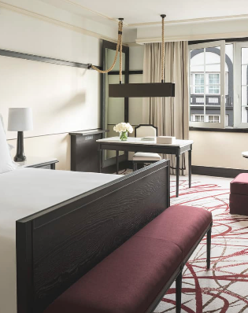

Habitación Estándar
Estas espaciosas habitaciones son perfectas para los viajes de negocios breves o las escapadas de fin de semana y ofrecen espacio suficiente tanto para el trabajo como la diversión.
Suite Junior
Un elegante vestíbulo y una paleta de colores intensos lo reciben en estas radiantes y espaciosas suites, que cuentan con salas de estar y dormitorios independientes para darle la quietud que necesita después de un día lleno de diversión.

Suite Ejecutiva
Las elegantes puertas francesas de estas habitaciones ubicadas en el segundo piso dan a una terraza privada, que es el sitio perfecto para disfrutar de un café por la mañana y deleitarse con la vista al plácido patio.

Master Suite
Los techos altos, pisos de madera y una paleta de colores vivos inspirada en el estilo indígena con tonos de naranja, azul cielo y dorado le dan a esta suite de categoría especial el aire de una elegante casona mexicana, con amplio espacio para recibir invitados.